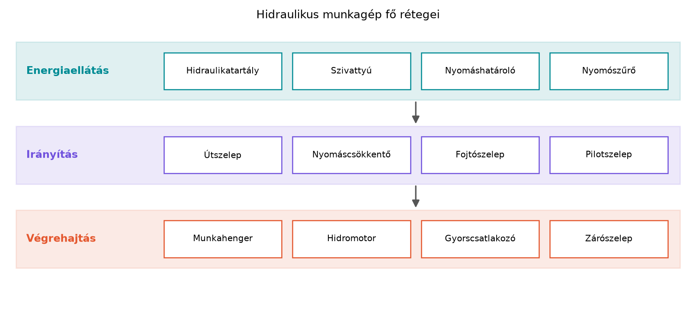

A homlokrakodó kanala a műszak elején még megemelkedik, délutánra azonban már csak lassan, és a hidraulikaolaj is feltűnően forró. A gép kezelője a gépnaplóba csak annyit írt, hogy „rendben”. Ha nem tudod, hogy a hidraulikus rendszer milyen rétegekből épül fel, és miért kötelező a műszakkezdés előtti ellenőrzést dokumentálni, akkor az ilyen hibát csak utólag, nagyobb kárral lehet felderíteni. Ugyanez a tudás kell az emelőgép-kezelői feladatoknál is: a hidraulikus munkagép elemeinek megnevezése és a gépnapló vezetése ott már nem bónusz, hanem a biztonságos munkavégzés feltétele.
A következő ábra azt a három funkcióréteget mutatja, amelyre minden munkagép hidraulikáját rá tudjuk rajzolni:

A rétegek sorrendje nemcsak a tanulásban, hanem a hibakeresésben is hasznos: először mindig az energiaellátást, azután az irányítást, végül a végrehajtó elemet vizsgáljuk.
Definíció. Hidraulikus hajtásnak (hydraulic drive) nevezzük azt a hajtásrendszert, amely nyomás alatt lévő folyadék, többnyire hidraulikaolaj energiájával hoz létre erőt és mozgást. A folyadékot a szivattyú áramoltatja, a nyomást pedig a terhelés hozza létre.
Definíció. Pneumatikus hajtásnak (pneumatic drive) nevezzük a sűrített levegővel működő rendszert. A levegő a kompresszorból, a légtartályon és légszárítón keresztül jut az irányító szelepekhez, majd a munkahengerekhez vagy más végrehajtókhoz.
Definíció. Gépnapló (machine logbook; gyakran „üzemeltetési napló”) a munkagép üzemeltetését, ellenőrzéseit, karbantartásait, javításait, folyadék- és kenőanyag-felhasználását, valamint a kezelői észrevételeket időrendben rögzítő dokumentum.
A hidraulikus munkahenger erejét a Műhelyi veszélyek: emelés, akna, kipufogógáz, forgó részek, sűrített levegő és Hidraulikus, pneumatikus és gépjárműrendszer-rajzok olvasása alfejezetben már megismert összefüggés adja:
Ahol a dugattyúrúd által kifejtett erő, a rendszernyomás, a dugattyú felülete, a hengerfurat átmérője. Ez az egyetlen képlet elegendő ahhoz, hogy megértsük, miért lehet egy 200 baros hidraulikus rendszer ugyanolyan erőt kifejteni, mint egy jóval nagyobb, nehéz mechanikus szerkezet.
A gépkezelő rajzolvasásánál nem a gép legyártásához, hanem az üzemeltetéshez és a hiba behatárolásához kell tudni olvasni a kapcsolási vázlatot. A Hidraulikus, pneumatikus és gépjárműrendszer-rajzok olvasása alfejezetben megismert ISO 1219-jelöléseket itt már teljes munkagép-rendszereken alkalmazzuk. A rajz leggyakoribb elemei:
A 4/3 jelölés azt jelenti, hogy a szelepnek négy csatlakozása és három kapcsolási állása van. A munkagépeken gyakori a 4/3 tolattyús útváltó, amely egy henger két irányú mozgatását és a nyugalmi állapotot is tudja biztosítani.
A munkagépek többségén a hajtómotor dízelmotor, mert nagy nyomatékot kell tartósan leadni, és a fogyasztás is kedvezőbb, mint az Otto-motoré. A dízel befecskendező rendszer a(z) Közös nyomásterű (common rail) dízelbefecskendezés alfejezetben tárgyalt nagynyomású rendszerhez hasonlóan dolgozik, a munkagép-kezelő számára azonban a motor legfontosabb pontja a műszak eleji ellenőrzés: motorolajszint, hűtőfolyadék-szint, ékszíjak, szivárgások, kipufogógáz-szín.
Az elektromos rész a 12 vagy 24 V-os fedélzeti hálózat. A gépkezelőnek ismernie kell az indítókör alapkapcsolásait, mert a „nem indul” hiba gyakran rossz érintkezésből vagy megnövekedett feszültségesésből adódik. A Indítómotorok alfejezetben tanult 30-as és 50-es kapocsjelölés itt is érvényes: a 30 a közvetlen akkumulátor-plusz, az 50 a gyújtáskapcsolón át vezérelt indítójelfeszültség.
A hidraulikus munkagép energiaellátó oldala hidraulikatartályból, szivattyúból, nyomáshatárolóból és szűrőkből áll. A tartály nemcsak olajtároló, hanem hőtágulási tartalékot, levegőleválasztást és ülepítést is biztosít. A szivattyú a motortól kapott mechanikai energiát alakítja olajárammá; a munkagépeken leggyakrabban fogaskerék-, lapát- vagy axiáldugattyús szivattyú fordul elő.
Szabály. A hidraulika nyitott körű, ha az olaj a tartályból a szivattyún át a fogyasztóhoz jut, majd a tartályba folyik vissza. Zárt körben a hidromotor visszatérő ága közvetlenül a szivattyú szívócsatlakozásába jut, így kisebb tartály is elegendő.
A hidraulikus rendszerben a nyomáshatároló a biztonsági elem. Ha a terhelés túl nagy, vagy a henger végállásba ér, a nyomáshatároló kinyit, és az olaj a tartályba folyik. Ezért mondjuk, hogy a szivattyú nem a nyomást, hanem a térfogatáramot szabja meg; a nyomást a terhelés és a nyomáshatároló beállítása adja.
A szűrőket a szívó-, a nyomó- és a visszafolyó ágban is beépíthetik. A szennyeződés okozza a legtöbb hidraulikus meghibásodást, ezért a szűrőbetéteket a gyártói ütemterv szerint cseréljük. A tömítettség belső és külső is lehet. A külső szivárgás látható olajnyom, a belső szivárgás viszont nem feltétlenül, mert a dugattyú vagy a tolattyú mellett folyik át az olaj, és teljesítményveszteséget, melegedést okoz.
Példa. Milyen erőt tud kifejteni egy hidraulikus munkahenger, ha a hengerfurat átmérője , és a terhelés alatti nyomás ?
Számítás. A dugattyúfelület:
A nyomás átszámítva:
Az erő:
∎
Ez az erő már több tonnányi teher emelésére elegendő, és jól mutatja, miért kell a hidraulikus kört nyomásmentesítés nélkül soha nem bontani.
A pneumatikus rendszer a fékműködtetésben, a gépipari munkahengerekben és egyes vezérlésekben jelenik meg. A kompresszor levegőt sűrít a légtartályba, ahol a nyomásjellemző 6–10 bar körül van, de a pontos érték a rendszer típusától függ. A légelőkészítő egység (szűrő, nyomáscsökkentő, ködolajozó; gyakran FRL-nek nevezik) gondoskodik a tiszta, megfelelő nyomású és kenőködöt tartalmazó levegőről. A pneumatikus henger erő kisebb, mint egy hasonló méretű hidraulikus hengeré, de a rendszer egyszerűbb, és nincs olajszivárgási veszteség.
Példa. Egy dugattyúátmérőjű pneumatikus munkahenger nyomáson:
∎
Ez a hidraulikus példánál körülbelül százszor kisebb erő, ezért a pneumatika elsősorban gyors, kis és közepes erejű műveletekhez alkalmas.
A gépkezelő a gépet akkor üzemelteti gazdaságosan, ha a feladatot a szükséges terhelés mellett, felesleges üresjárat és felesleges nagyfordulat nélkül végzi. A fő üzemeltetési költségek: üzemanyag, motor- és hidraulikaolaj, szűrőbetétek, kopó alkatrészek, karbantartási munkaidő és a hibás üzemelésből fakadó károk. A hosszú hidegüzemi üresjárat, a gyakori maximális fordulatszám, a szennyezett hidraulikaolaj és az elhanyagolt kenés mind növeli az üzemóraköltséget.
A pontos gazdaságossági mutatót a gépnaplóból lehet kiszámolni: a havi felhasznált üzemanyag-mennyiség és az üzemóraszám hányadosa adja a gép fajlagos fogyasztását l/üzemóra mértékegységben (pl. 1 620 l / 180 h = 9,0 l/h). Ezt csak a pontos üzemóra-bejegyzés teszi megbízhatóvá.
Előírás. A gépkezelő a munkagépet csak a gyártó gépkönyvében, a munkavédelmi utasításban és a gép dokumentációjában megadott módon üzemeltetheti. Az ellenőrzések elvégzése és a gépnapló vezetése nem adminisztratív kényelem, hanem az üzemeltetési és munkavédelmi követelmények része (ellenőrizendő: a hatályos munkavédelmi törvény és a munkagépekre vonatkozó előírások pontos rendelkezései).
A gépkezelő napi adminisztrációja három pillérből áll:
A javításhoz kapcsolódó dokumentációban a szerelő a hiba okát, a beavatkozást és a felhasznált alkatrészeket rögzíti. Ez nem tévesztendő össze a gépkezelő gépnaplójával; a kettő gyakran egy dokumentumban fut, de a bejegyzések felelőssége eltérő.
Előírás. A gépnaplóban a műszakkezdés előtti ellenőrzés megtörténtét és az esetleges hibát rögzíteni kell; a hibás, balesetveszélyes gépet a kezelő nem indíthatja el, és az észlelést a munkáltatónak vagy a karbantartó szervezetnek jelentenie kell (ellenőrizendő: a munkagépek biztonsági és üzemeltetési követelményeiről szóló hatályos előírások).
A gépkezelő hibaelhárítása a tünet felismeréséből és a hibabehatárolásból áll; a javítást csak a kijelölt karbantartó végezheti. Az általános lánc: tünet rögzítése → külső látható ellenőrzés → gépnapló és előzmények áttekintése → mérőműszeres ellenőrzés → ok azonosítása → javítás → próbaüzem → dokumentálás.
A leggyakoribb hidraulikus tünetek közé tartozik a lassú munkamozgás, a munkahenger süllyedése, a túlmelegedés, a habos olaj, a szivattyúzaj és a nyomásesés. A tünetekhez egyszerű méréseket rendelünk: rendszernyomás mérése teher alatt, olajhőmérséklet, szint, szűrővizsgálat, tömítettség-ellenőrzés.
A hidraulikus rendszeren végzett javítás alapvető technológiai sorrendje:
A telephelyi teleszkópos rakodó gémje a műszak elején még megfelelően emelt, a nap végére azonban csak lassan, és a hidraulikaolaj hőmérsékletjelzője is magas értéket mutatott. A gépnaplóban az előző napi műszakkezdési ellenőrzésnél csak „rendben” szerepelt. A kezelő nem vette észre, hogy a hidraulikatartály alatti talajon friss olajfolt van, a tartály szintüvegén pedig az olajszint a minimum alatt van. A szivattyú szívóoldali csatlakozása levegőt szívott be; az olaj habos lett, a rendszer hatásfoka lecsökkent, és a belső veszteség melegedést okozott. A karbantartó kicserélte a szivárgó szívótömlőt, a tartályt a gépkönyv szerinti olajjal a jelzésig feltöltötte, a rendszert légtelenítette, az olaj állapotát (hab, szín, víztartalom) ellenőrizte, a talajra folyt olajat felitatóval összegyűjtötte és veszélyes hulladékként kezelte, majd a rendszernyomást is ellenőrizte; a gyártói tartományban találta, így a hibát a gépnaplóba bejegyezve a gépet visszaadta a munkának. A tanulság: ha a gépnapló őszintén rögzítette volna a kora reggeli olajfoltot, a javítás kisebb költséggel járt volna.
Biztonsági korlát. A feladat tanműhelyi környezetre, oktató felügyeletére és a gyártói javítási utasítás betartására vonatkozik; a megadott értékek tanulási példák.
A következő számozott eljárás a műszakkezdés előtti ellenőrzés lépéseit mutatja egy munkagépen:
Az ábra számozott pontjai a fenti lépésekhez tartoznak: a körbejárás (2. lépés) az abroncsokat (1), a hidraulikus hengereket és tömlőket (2), a gémet és csúszólapjait (3), a villa vagy adapter rögzítőcsapjait (4) és a tűzoltó készüléket (10) érinti; a folyadékszintek (5) és a levegőszűrő-jelző (6) a 3. lépés, a világítás és a tolatásjelző (7), valamint a vészleállító (8) az 5. lépés, a kezelőfülke biztonsági elemei (9) a 4., 6. és 8. lépés része; a végén a gépnaplóba írunk (11, 9. lépés). Az interaktív változat pontról pontra végigvezet a körbejáráson, és mindegyiknél leírja, mit nézünk és mi számít hibának.
Figyelem. A hidraulikaolaj kicsi, nehezen látható lyukon is nagy sebességgel léphet ki, és a bőrbe hatolva súlyos, azonnali orvosi ellátást igénylő sérülést okozhat. A hidraulikus csatlakozót nyomás alatt tilos megbontani; előtte az emelt munkaszervet biztos alátámasztásba kell engedni, a rendszert nyomásmentesíteni, és a szivárgást tilos kézzel érzékelni. Pneumatikus tartályt és vezetéket csak a nyomásmentesítés után szabad megbontani.
A hidraulikus munkagépeknél gyakori hibák:
1. feladat (A) Nevezze meg a hidraulikus munkagép három funkciórétegét, és mindegyikre mondjon két-két elemet!
2. feladat (A) Számítsa ki egy hidraulikus munkahenger dugattyúrúd-erejét, ha a hengerfurat , a terhelés alatti rendszernyomás pedig !
3. feladat (B) Egy hidraulikus kézi emelő hengerének dugattyúátmérője , a munkadugattyú átmérője . A kezelő a kis dugattyúra erővel hat. Ideális veszteségmentes esetben mekkora erőt kapunk a nagy dugattyún?
4. feladat (B) A műszakkezdés előtti ellenőrzés során a hidraulikatartály olajszintje a minimum alatt van, a tartály alatt pedig olajfolt látható. Sorolja fel a gépkezelő teendőit, és indokolja, miért nem indíthatja el a gépet!
5. feladat (C) Egy rakodógép hidraulikája lassú, az olaj hőmérséklete magas, a szivattyú zúg. Foglalja össze a lehetséges okokat és a hozzájuk tartozó ellenőrzéseket a hibakeresési lánc szerint!
6. feladat (D) A munkahenger terhelés alatt lassan süllyed, külső olajszivárgás nem látható. Adjon meg egy olyan behatárolási lépést, amellyel eldönthető, hogy a belső szivárgás a hengerben vagy az irányító/zárószelepben van! Írja le a mérési logikát, és nevezze meg a szükséges biztonsági lépéseket!
Önellenőrzés – válaszok
1. feladat (A)
A hidraulikus munkagép három rétege: energiaellátás, irányítás,
végrehajtás. Energiaellátás: hidraulikatartály, szivattyú,
nyomáshatároló, szűrő. Irányítás: útváltó, nyomáscsökkentő, fojtószelep,
visszacsapó. Végrehajtás: munkahenger, hidromotor, zárószelep,
gyorscsatlakozó.
2. feladat (A)
Adott:
,
.
Keresett:
.
Ellenőrzés: az átmérő kisebb, mint az előző 80 mm-es példában, ezért a kisebb felület és a kisebb nyomás miatt 100 kN-nál kisebb erő várható. ∎
3. feladat (B)
Kis dugattyú felülete:
A nyomás:
A nagy dugattyú felülete:
A kimenő erő:
∎
4. feladat (B)
A gépkezelő a gépet nem indítja el; a munkaszerveket biztosítja; a
gépnaplóba bejegyzi az olajszintet és a látott olajfoltot; értesíti a
műszaki vezetőt. Azért nem szabad indítani, mert a szivattyú a szívóágon
levegőt szívhat, kenésromlást és kavitációt okozhat, és a szivárgó olaj
baleseti kockázatot is jelent.
5. feladat (C)
A lehetséges okok:
A sorrend: először a külső szivárgás és az olajszint, azután a szűrő, majd a rendszernyomás mérése, végül a szivattyú és a nyomáshatároló belső állapotának vizsgálata. A javítás után próbaüzemet kell tartani, és a gépnaplóba bejegyzést tenni.
6. feladat (D)
A behatárolást csak kijelölt karbantartó végezheti, a gyártói eljárás
szerint. (1) A terhet a henger tartja; a veszélyzónát lezárjuk, senki
sem tartózkodik a teher alatt; adott ideig (pl. 10 perc; ellenőrizendő)
mérjük a süllyedést. (2) A terhet biztos letámasztásra engedjük, a kört
a gyártó szerint nyomásmentesítjük. (3) A henger rúdoldali vezetékét
bontjuk, a hengeroldali csatlakozást dugóval lezárjuk, a dugattyúoldalt
a gyártói módon terheljük; ha a nyitott rúdoldali csatlakozáson olaj
folyik ki, a dugattyútömítés szivárog a hengerben, ha nem, az irányító-
vagy zárószelep belső szivárgása a valószínű ok (ellenőrizendő: gyártói
eljárás). A munkát olajbehatolás elleni védelemmel (védőszemüveg,
kesztyű) végezzük, és a hibát meg a behatárolás eredményét a gépnaplóba
bejegyezzük.
A munkagép hidraulikus rendszere három rétegből áll: energiaellátás, irányítás és végrehajtás. Az energiaellátó oldal a tartály, a szivattyú, a nyomáshatároló és a szűrők; az irányító oldal az útszelepek, nyomásszelepek és fojtások; a végrehajtó oldal a munkahengerek és hidromotorok. A hidraulikus erőt a összefüggés adja, ezért a nyomás alatti rendszer bontása súlyos balesetet okozhat. A pneumatikus rendszer sűrített levegővel dolgozik, nyomását a kompresszor, a légtartály és a biztonsági elemek tartják korlátok között. A gazdaságos üzemeltetés a gépnapló pontos vezetésén, a folyadékszintek ellenőrzésén és a felesleges terhelés kerülésén alapul. A gépkezelő a műszakkezdés előtti ellenőrzést végzi, a hibákat dokumentálja, a javítást azonban csak a kijelölt karbantartó hajthatja végre. Továbbvitt eredmény. A hidraulikus munkagép részegységeinek megnevezését és a gépnapló-vezetés rendjét használjuk az Emelőgépkezelés: szerkezettan, teherfelvevő eszközök, kötözés, irányítás és üzemeltetés előtti vizsgálat alfejezetben.
Forrástípusok: a munkavédelemről szóló 1993. évi XCIII. törvény és végrehajtási rendeletei; a munkagépek biztonsági követelményeire vonatkozó hatályos magyar rendeletek; a gépek biztonsági követelményeiről szóló uniós gépek irányelvét átültető jogszabály; ISO 1219 hidraulikus/pneumatikus rajzjelek; munkaadói belső üzemeltetési utasítás és a gyártói gépkönyv.